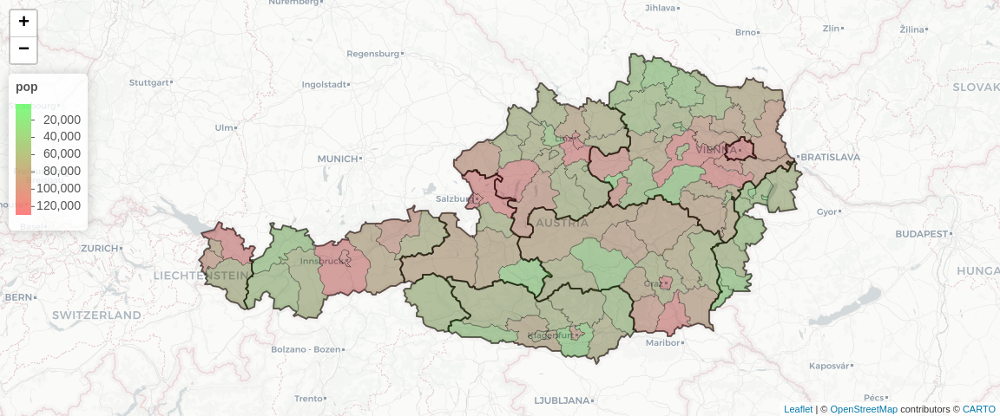

An R package for austrian nuts regions, munacipies and districts. Aimed to simplify your work with spatial variables in data analysis projects.
Installation and setup
The package can be installed directly from github
remotes::install_github('GregorDeCillia/nutsr')Optional: Set up a cache with conversion rules and region polygons This cache are used throughout the package. Requires an active internet connection. See below for data sources and usecases. If this step is skipped, the cache will be populated on demand.
library(nutsr)
nutsr_cache_dir('~/.cache/nutsr')
cache_conversion_rules()
#> cached 6 'data.frame' objects in '~/.cache/nutsr'
cache_region_shapes()
#> cached 3 'sf' objects in '~/.cache/nutsr'Conversion rules for regions
nutsr gives access to conversion rules for all nuts1, nuts2 and nuts3 regions as well as munacipies (iso3) and districts (iso5). This data has been collected via the {STATcubeR} package. Conversion rules are data frames with three columns: code, parent and name. They provide a custom summary() method.
head(nuts2(), 4)
#> # A tibble: 4 × 3
#> code parent name
#> <chr> <chr> <chr>
#> 1 AT11 AT1 Burgenland
#> 2 AT12 AT1 Niederösterreich
#> 3 AT13 AT1 Wien
#> 4 AT21 AT2 Kärnten
summary(nuts1())
#> 3 conversion rules between nuts1 and nuts0
summary(nuts2())
#> 9 conversion rules between nuts2 and nuts1
summary(nuts3())
#> 36 conversion rules between nuts3 and nuts2
summary(iso1())
#> 9 conversion rules between iso1 and nuts2
summary(iso3())
#> 93 conversion rules between iso3 and iso1
summary(iso5())
#> 2117 conversion rules between iso5 and iso3Utility functions for data analysis
nutsr provides several utility functions to make data analysis easier. All these utility functions make use of the tables above.
Convert codes to labels or vice versa
region_labels(c('AT1', 'AT11', 'AT111', '10101'))
#> [1] "Ostösterreich" "Burgenland" "Mittelburgenland" "Eisenstadt"
region_codes(c("Ostösterreich", "Burgenland", "Mittelburgenland", "Eisenstadt"))
#> [1] "AT1" "AT11" "AT111" "10101"
region_codes("Burgenland", prefer = "iso")
#> [1] "1"Get information about hierarchies
region_parents(c('AT1', 'AT11', 'AT111', '10101'))
#> [1] "AT" "AT1" "AT11" "101"
region_levels(c('AT1', 'AT11', 'AT111', '1', '101', '10101'))
#> [1] "nuts1" "nuts2" "nuts3" "iso1" "iso3" "iso5"Data visualization
Visualize regional data with nuts_map(). This will create a {leaflet} map for the regions.

See the data visualization article for more examples.
Similar projects
The {eurostat} package contains information about nuts1, nuts2 and nuts3 regions for all EU27 countries, including austria.
?eurostat::add_nuts_level
?eurostat::recode_to_nuts_2016
?eurostat::get_eurostat_geospatial